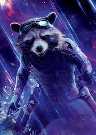

ROCKET RACCOON

« Y en a pas deux comme moi ! Je suis unique en mon genre ! » — Rocket Raccoon
lien de la page officiel
véritable Nom : 89P13
espèce : Demi-Mondien
sexe: Homme
films : Les Gardiens De La Galxie 1-2-3, Avengers : Infinity War-Endgame, Thor : Love and Thunder
Histoire : 89P13, principalement connu Rocket, est une créature génétiquement optimisée devenu un criminel indépendant. Aux côtés de son ami et partenaire Groot, Rocket traversa la galaxie à la recherche de primes, avant qu'ils ne rencontrèrent Star-Lord qui les convainquit de les aider à vendre l'Orbe pour d'importants profits. Toutefois, après qu'ils aient découverts que l'Orbe était une des Pierres d'Infinités recherchée par Ronan l'Accusateur, Rocket fut convaincu de tout risquer à l'inverse de sa nature profonde pour empêcher Ronande détruire Xandar et de réduire le monde en esclavage. Durant le combat qui s'ensuivit, Rocket aida ses amis à détruire Ronan, bien que Groot fut tué. Rocket devint membre des Gardiens de la Galaxie aux côtés d'un bébé Groot fraîchement replanté.
Rocket continua à travailler avec les Gardiens de la Galaxie, notamment quand ils furent embauchés par les Souverains pour détruire l'Abilisk. Néanmoins, Rocket se servit de cette mission comme un moyen pour voler les Batteries Anulax puis de les revendre, ce qui énerva profondément Ayesha, l'amenant la Souveraine à déclarer une guerre aux Gardiens et à embaucher les Ravageurs pour les ramener. Rocket et Groot se retrouvèrent ainsi capturés par Taserface, qui avait prit le commandement des Ravageurs à Yondu Udonta, obligeant Rocket et Udonta à travailler ensemble pour se libérer et tuer Taserface. Alors qu'il était aux côtés d'Udonta et qu'ils cherchaient à retrouver les Gardiens, Rocket apprit à devenir une meilleure personne et comprit à quel point il comptait sur ses amis Gardiens, puis se joignit à la Bataille de la Planète d'Ego où Udonta perdit la vie.